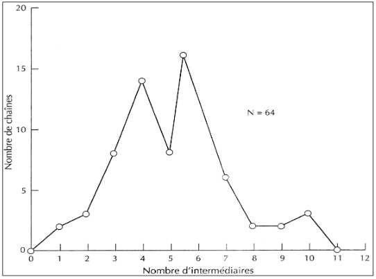
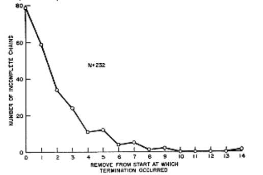
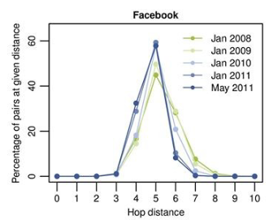
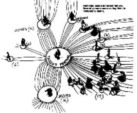

Pourquoi je reçois ça ?
🔑 Objectifs et compétences :
Objectifs de séance :
- Comprendre la théorie du Petit Monde et la notion de six degrés de séparation .
- Savoir modéliser un réseau social par un graphe et utiliser les notions associés.
- Analyser l’évolution des réseaux sociaux numériques par rapport aux réseaux classiques.
- Découvrir le rôle des influenceurs et leur impact dans la diffusion de l’information.
- Comprendre le fonctionnement des algorithmes de recommandation et le phénomène des bulles informationnelles.
Compétences développées :
- Analyser des données statistiques et sociologiques (Milgram, Facebook, Messenger).
- Faire des liens entre mathématiques et sciences sociales (réseaux sociaux et diffusion d’informations).
- Collaborer pour construire des graphes et calculer des indicateurs.
- Développer l’esprit critique face aux recommandations et aux bulles de filtre.
- Argumenter sur les avantages et risques des réseaux sociaux numériques.
Petit Monde de Milgram
📘 Document :
https://www.yout-ube.com/watch?v=gOiIQ0qGiCc
📘 Document : vidéo MOOC SNT
https://www.yout-ube.com/watch?v=nn1mIqW9oYQ
Qu’est-ce qu’un graphe petit monde ?
Expliquer l’expérience de Milgram et sa conclusion.
Quelles critiques peut-on formuler sur cette théorie ?
Etude statistique
Etude de départ
Le principe du petit Monde de Milgram est basé sur les travaux de sociologue et psychologue de la première moitié du XXsiècle.
« Les hommes sont enserrés dans de vastes réseaux de relations sociales. Ainsi, supposons que A connaît B, que B connaît C, que C connaît D : nous pouvons alors faire passer un message de A à D. Mais ici aussi nous sommes arrêtés court, quand nous choisissons mal l’un de nos intermédiaires : si par hasard B ne connaît pas C, le message n’arrive pas à destination. »
L’idée générale était d’obtenir un échantillon d’hommes et de femmes de tous horizons. On donnerait, à chacune de ces personnes, le nom et l’adresse d’un même individu cible, (…)
On demanderait, à chaque personne, de transmettre le message à l’ami ou la connaissance qu’elle penserait la mieux à même de connaître l’individu cible.
En fonction du nombre d’intermédiaires que cela a nécessité, les graphiques ci-dessous indiquent :
- nombre de messages ayant atteint leur cible (à gauche)
- Le nombre de messages n’ayant pas atteint leur cible (au centre)
- Le petit monde de Facebook



- Combien de messages ont été envoyés et quel pourcentage a atteint la cible? ……
- Quelle est la longueur de la chaîne la plus longue ayant atteint son but ? ……
- Calculer le nombre moyen d’intermédiaires des chaînes ayant atteint la cible : ……
- Sur le graphique de Facebook, calculer la moyenne : ……
Un monde de plus en plus petit
10 % de la population mondiale de plus de treize ans, la distance moyenne entre utilisateurs valait 4,7. En se restreignant à ceux qui habitaient les États-Unis, elle n’était plus que de 4,37
- Que peut-on en conclure sur le réseautage via les réseaux sociaux numérique
Les influenceur.euse.s : Stars des Réseaux sociaux
Sur l’étude de Milgram, on formule la remarque suivante : les chaines forment des entonnoirs, passant par des “ stars ” sociales, 48% d’entre elles ne passant que par trois personnes en lien direct avec la cible.
Avec l’avènement du Web 2.0 (web participatif) , émergent des blogueurs dits “influents”. Avec l’arrivée des médias sociaux, le terme d’ influenceur est utilisé.

- Qu’est-ce qu’un influenceur et quelle est sa position privilégiée dans un graphe ?
Que peut-on conclure ? - Quels types de contenus publient-ils ? Sont-ils toujours neutres ?
- Quels sont les avantages et risques des influenceurs (abonnées, marques, société en général) ?
- Expliquer pourquoi les chaînes sont-elles plus courtes via les réseaux sociaux.
Recommandation et bulles informationnelles
Dans un réseau social dense et interconnecté, les bulles devraient être plus faciles à briser : il suffirait de quelques intermédiaires pour atteindre n’importe quelle information.
Mais les bulles de filtre créent des sous-espaces clos → on reste exposé aux mêmes types de contenus, même si on est à un clic de contenus différents. Les algorithmes jouent alors le rôle d’aiguillage, réduisant la diversité perçue dans un réseau pourtant très connecté. Les influenceurs amplifient certains contenus (par leur rôle de nœud central), mais renforcent parfois les bulles : leurs messages sont relayés à un public déjà acquis.
Question : Un influenceur peut-il faire sortir son audience de sa bulle ? Ou au contraire l’y enferme-t-il ?
- Expliquer simplement le fonctionnement d’un algorithme de recommandation.
- Qu’est-ce qu’une bulle informationnelle (ou bulle de filtre) ? Donner un exemple concret.
- Quels sont les dangers des bulles informationnelles ?
Paragraphe
A l’aide de l’ensemble de vos connaisances et du document travaillé, choisir une des deux questions suivantes et y répondre sous la forme d’un paragraphe argumenté.
- Les algorithmes renforcent-ils le concept de “petit monde” ou le limitent-ils ?
- Un influenceur peut-il faire sortir son audience de sa bulle ?